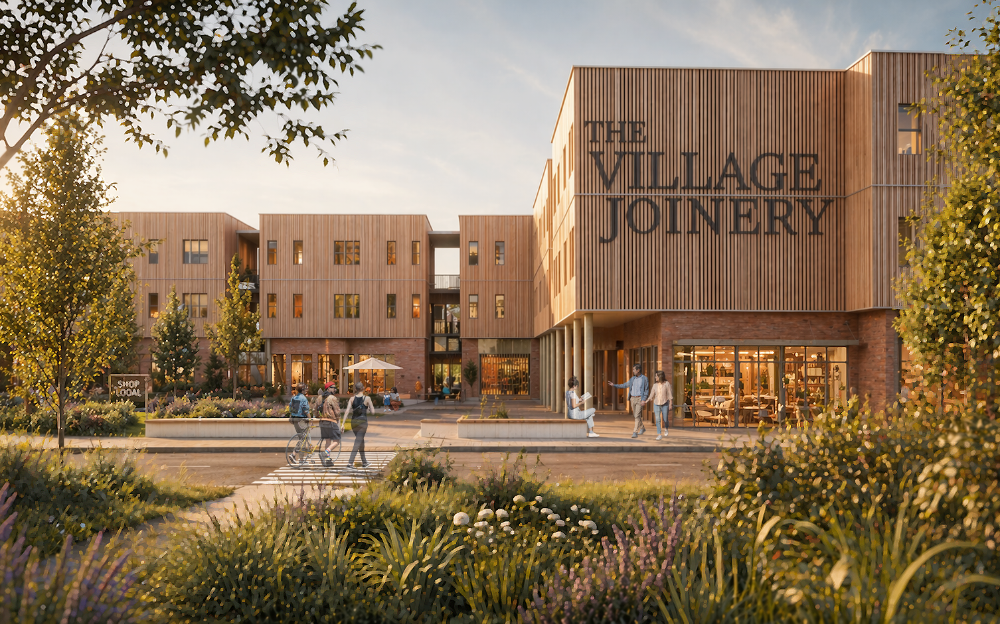

A competition of collaborative minds united by a shared vision, the Village Joinery was designed by Dylan Fujii and Amari Robertson. This project would not have been nearly as contextual without the mentorship of our professors, Tom Collins and Pam Harwood, and the support of professionals such as Sam Vonderau and the team at DELV Design.
2nd Place, USA National Competition ↗